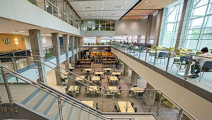

STARS ALIGN
The right study location can significantly impact your focus, productivity, and overall learning experience.
A quiet and well-lit environment, such as a library or a dedicated study room, helps minimize distractions and fosters concentration.
Alternatively, some people thrive in more dynamic spaces, like cafes or co-working areas, where a bit of background noise can enhance creativity.
Having a designated study area also promotes a mental association between the space and learning, improving the ability to focus.
Experimenting with different environments can help you find the ideal setting to boost your motivation and retain information more effectively.

The student center, a area to go that's filled with people. If being in a louder area is more comfortable to study and relax the student
center is the top choice. As its often busy and many people are there throughout the day but an amazing place with various study spots on different floors
with different settings. 8/10 rating.